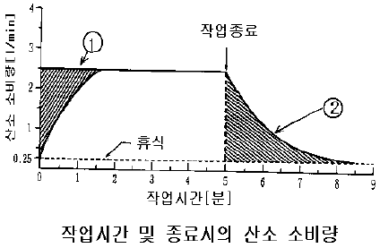
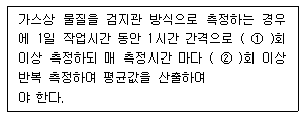
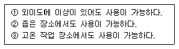
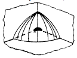

산업위생관리기사 (2006-05-14 기출문제)
1과목: 산업위생학개론
1. 환경위생학의 시조이며 실험위생학을 강조한 이는?
- Pettenkofer
- Plinly the Elder
- Ellenbog
- Agricola
(정답률: 알수없음)

2. 전신피로의 생리학적 원인과 관련이 없는 것은?
- 산소공급의 부족
- 혈중 포도당 농도 저하
- 혈중 젖산농도의 저하
- 근육 내 글리코겐 량의 감소
(정답률: 46%)
3. 근로자에 있어서 약한 손(왼손잡이의 경우 오른손)의 힘은 평균 45kp라고 한다. 이 근로자의 무게 18kg인 박스를 두 손으로 들어올리는 작업을 할 경우 적정작업시간은? (단, 671,120 × %MS -2.222 적용)
- 약 41.2분
- 약33.6분
- 약 23.7분
- 약 14.4분
(정답률: 20%)
4. 근로자로부터 35cm로 떨어진 물체(10kg)를 바닥으로부터 120cm 들어올리는 작업을 1분에 6회씩 1일 8시간 실시할 때 MPL은? (단, 박스의 손잡이는 양호하며 계산공식은 다음과 같다. AL=40(15/H)(1-0.004 IV-751), (0.7+(7.5+D))(1-(F/Fmax)), Fmax는 122회/min이다.)
- 13.7kg
- 15.7kg
- 17.7kg
- 19.7kg
(정답률: 알수없음)
5. 작업대사율(RPM)이 6인 중 작업에서의 실 동율은?
- 45%
- 55%
- 65%
- 75%
(정답률: 82%)
6. 근로자가 육체적인 일을 할 때 소모하는 에너지량은 산소소모량을 측정하여 간접적으로 추정할 수 있다. 보통 1L의 산소소비에 대한 에너지소모는 대략 얼마 정도인가?
- 2kcal
- 3kcal
- 5kcal
- 9kcal
(정답률: 알수없음)
7. 산업별 사망재해분포기준으로 사망 만인 율이 가장 높은 산업은?
- 건설업
- 광업
- 제조업
- 운수업
(정답률: 8%)
8. 인간공학에서 인간과 기계관계의 구성인자의 특성이 무엇인지 알아야 하는 단계는?
- 설계단계
- 선택단계
- 검토단계
- 준비단계
(정답률: 10%)
9. 다음의 그림은 작업의 시작 및 종료시의 산소소비량을 나타낸 것이다. ①, ②가 뜻하는 것은?

- ① 작업부채, ② 작업부채보상
- ① 작업부채 보상, ② 작업부채
- ① 산소부채, ② 산소부채보상
- ① 산소부채보상, ② 산소부채
(정답률: 73%)
10. 생물학적 모니터링에 사용되는 혈액의 채취, 보관, 분석 시 고려사항으로 틀린 것은?
- 휘발성 물질 시료의 손실방지를 위하여 최대 용량채취
- 고무마개에 혈액 흡착을 고려
- 적절한 혈액 응고 제 선정
- 생물학적 기준치는 정맥혈을 기준
(정답률: 24%)
11. 인간공학에 적용되는 동적 치수(Dynamic dimensions)에 관한 설명으로 틀린 것은?
- 정적 인체 치수에 비하여 상대적으로 데이터가 많다.
- 다양한 움직임을 표로 제시하기 어렵다.
- 육체적인 활동을 하는 상황에서 측정한 치수이다.
- 정적 인체 데이터로부터 기능적 인체치수로 환산하는 일반적인 원칙은 없다.
(정답률: 알수없음)
12. 어느 근로자의 1시간 작업에 소요되는 열량이 500kcal이었다면, 작업 대사 율은 약 얼마인가? (단. 기초대사량: 60kcal/hr, 안정 시 열량은 기초대사량의 1.2배임.)
- 4.7
- 5.4
- 6.4
- 7.1
(정답률: 39%)
13. 산업피로의 검사방법 중에서 CM조사에 해당하는 것은?
- 생리적 기능검사
- 생화학적 검사
- 피로자각증상
- 동작분석
(정답률: 알수없음)
14. 미국산업안전보건연구원(NIOSH)의 중량을 취급작업 기준 중 최대허용기준(MPL)의 설정배경과 가장 거리가 먼 것은?
- 역학조사결과
- 노동심리학적 연구결과
- 정신물리학적 연구결과
- 인간공학적 연구결과
(정답률: 17%)
15. ACGIH TLV 적용 시 주의사항으로 틀린 것은?
- 경험있는 산업 위생가가 적용하여야 함.
- 정상작업시간을 초과한 노출에 대한 독성평가에는 적용할 수 없음
- 안전과 위험농도를 구분하는 일반적 경계선으로 적용
- 독성강도를 비교할 수 잇는 지표가 아님
(정답률: 82%)
16. 직업성 암을 최초로 보고하고 어린이 굴뚝 청소부에게 많이 발생하는 음낭암(Scortalcnacer)의 원인물질을 검댕(Soot)이라고 규명한 18세기 영국의 의사는?
- Benardio Ramazzini
- Percival Pott
- Pilny the Elder
- Ulrich ellenbog
(정답률: 80%)
17. 유해물질 노출과 질병과의 관계를 규명한 미국 최초의 산업위생학자이며 산업의학자는?
- Allice Hamilton
- Percival Pott
- Agricola
- Pilny the Elder
(정답률: 알수없음)
18. 전신피로 정도를 평가하기 위해 작업 직후 심박 수를 측정한다. 작업종료 후 30-60초, 60-90초, 150-180초 사이의 평균 맥박수를 각각 HR 30-60, HR 60-90, HR 150-180라 할때 심한 전신피로 상태로 판단되는 측정치 기준은?
- HR 150-180 이 초과하고 HR 30-60 와 HR 60-90의 차이가 10 미만일 때
- HR 30-60 이 110을 초과하고 HR 150-180 와HR 30-60 의 차이가 10미만일 때
- HR 30-60 이 110을 초과하고 HR 150-180 와 HR 60-90 차이가 10 미만일 때
- HR 30-60 와 HR 150-180 차이가 10이상이고 HR 150-180, HR 60-90의 차가 10미만일 때
(정답률: 73%)
19. 인간 근로일수가300일이며, 연간 근로시간 수가 20,000 시간인 사업장에서 1년간 2건의 재해 부상자 3명 발생으로 인하여 총 휴업일 수 100일이 발생하였다. 재해 강도 율은?
- 1.7
- 2.7
- 3.8
- 4.1
(정답률: 40%)
20. 바람직한 교대제의 편성 요건과 가장 거리가 먼 내용은?
- 야근후의 휴일은 48시간으로 할 것을 권한다.
- 근무시간의 간격은 24시간 이상이 적절하다.
- 야근은 2-3일 이상 연속하지 않는다.
- 가면은 근무시간에 따라 2-4시간으로 하는 것이 좋다.
(정답률: 64%)
2과목: 작업위생측정 및 평가
21. 유량, 측정시간. 회수율 및 분석 등에 의한 오차가 각각 10, 5, 7 및 5%였다. 만약 유량에 의한 오차를 3%로 개선시켰다면 개선 후의 누적오차는?
- 8.9%
- 9.7%
- 10.4%
- 11.3%
(정답률: 60%)
22. 공기유량과 용량을 보정하는데 사용되는 표준기구 중 1차 표준기구가 아닌 것은?
- 폐활량계
- 로타미터
- 비누거품미터
- 가스미터
(정답률: 80%)
23. 각각의 85dB의 음압수준을 발생하는 소음원이 동시에 가동될 때 발생하는 음압수준은?
- 86dB
- 87dB
- 88dB
- 89dB
(정답률: 알수없음)
24. 공기 중에 카본 테트라클로라이드(TLV=10ppm) 8ppm, 1,2-디클로로에탄(TLV=50ppm)20pp 그리고 1,2-디브로모에탄(TLV=20ppm) 10ppm 으로 오염되었을때 이 작업장 환경의 허용(노출)기준 농도는? (단, 상가작용 기준)
- 21.5ppm
- 22.4ppm
- 24.8ppm
- 28.6ppm
(정답률: 77%)
25. 실리카겔 흡착에 대한 설명으로 옳지 않은 것은?
- 실리카겔은 규산 나트륨과 황산과의 반응에서 유도된 무정형의 물질이다.
- 극성을 띠고 흡습성이 강하므로 습도가 높을수록 파과 용량이 증가한다.
- 추출액이 화학분석이나 기기분석에 방해물질로 작업하는 경우가 많지 않다.
- 활성탄으로 채취가 어려운 아닐린, 오르쏘-톨루이딘 등의 아민류나 몇몇 무기물질의 채취도 가능하다.
(정답률: 46%)
26. 어느 공장 건물 내의 NO2 농도가 25℃, 1기압에서 24㎍/m3이였다면, 이것은 몇 ppm 인가?
- 약 0.043ppm
- 약 0.033ppm
- 약 0.023ppm
- 약 0.013ppm
(정답률: 50%)
27. 작업환경측정시 활성탄에 흡착된 가스상 물질(방향족 탄화 수소류) 탈착에 일반적으로 사용되는 탈착 용매는?
- 벤젠
- 2-브로모프로판올
- 이황화탄소
- 물
(정답률: 73%)
28. 작업환경 측정 표시 단위에 대한 연결이 잘못된 것은?
- 석면농도 : 개/m33
- 소음 : dB(A)
- 온열(복사열 포함) : ℃
- 가스, 증기, 분진, 미스트 등의 농도 : mg/m3 또는 ppm
(정답률: 80%)
29. 수동식 시료채취기 사용시 최소한의 기류가 없어 채취기 표면에서 일단 확산에 의하여 오염물질이 제거되면 농도가 없어지거나 감소하는 현상은?
- 결핍 현상
- 마스킹 현상
- 바람막 현상
- Fick 확산 현상
(정답률: 28%)
30. 입자상 물질 측정을 위한 직경분립 충돌기에 관한 설명으로 틀린 것은?
- 입자의 질량크기분포를 얻을 수 있다.
- 호흡기의 부분별로 침착된 입자크기의 자료를 추정할 수 있다.
- 시료채취가 까다롭고 되튐으로 인한 시료 손실이 일어날 수 있다.
- 원심력의 원리를 적용하여 챔버 내 수평 공기흐름을 이용한다.
(정답률: 67%)
31. 액체 크로마토그래피(HPLC)에 관한 설명으로 틀린 것은?
- PCB, PNA 등의 고분자 화학물질을 분석하는데 이용함
- 빠른 분석 속도, 해상도, 민감도에 대한 장점이 있음
- 분석물질이 고정상에 녹아야 하는 제한 점이 있음
- 고정상을 채운 분리 관에 시료를 주입하는 방법과 이동상을 흘려주는 방법에 따라 전단분석, 치환법, 용리법 3가지 조작법으로 구분됨
(정답률: 알수없음)
32. 유리섬유 여과지 한 개를 사용하여 8시간 동안 카르바릴을 채취하였다. 측정된 공기 중 카르바릴의 농도는 7.0mg/m3였고 공기 중 카르바릴의 OEL은 5.0mg/m3이며 SAE는 0.23이였다면 근로자가 노출되어 있는 농도가 노출기준을 초과하는지 여부를 가장 알맞게 평가한 것은?
- 측정치는 허용기준 이하이다.
- 측정치는 허용기준 초과한다.
- 측정치는 허용기준 초과할 가능성이 있다.
- 측정치는 허용기준 초과할 가능성이 없다.
(정답률: 62%)
33. 다음 중 흑구 온도의 측정시간 기준으로 적절한 것은? (단, 직경이 5Cm인 흑구 온도계 기준)
- 5분 이상
- 10분 이상
- 15분 이상
- 25분 이상
(정답률: 55%)
34. 작업장의 환경관리를 위해서 먼저 작업장 내 유해인자를 측정해야 한다. 측정하기 전에 실시해야 하는 예비조사의 내용과 가장 거리가 먼 것은?
- 사업장의 일반적인 위생상태를 파악한다.
- 작업자 각 개인의 질병상태를 파악한다.
- 작업공정을 잘 이해한다.
- 현재 쓰이고 있는 대책을 파악한다.
(정답률: 40%)
35. 여러 성분이 있는 용액에서 증기가 나올 때 증기의 각 성분의 부분 압은 용액의 분압과 평행을 이룬다는 내용의 법칙은?
- 라울트의 법칙(Raoult’s Law)
- 게이-루삭의 법칙(Gay-Lussac’s Law)
- 보일-샤를의 법칙(Bolye-charle’s Law)
- 픽스의 법칙(Fick’s Law)
(정답률: 74%)
36. 다음 ( )안에 알맞은 내용은?

- 6-2
- 6-3
- 8-2
- 8-3
(정답률: 알수없음)
37. 열, 화학물질, 압력 등에 강한 특성을 가지고 있어 석탄 건류나 증류 등의 공정에서 발생되는 다핵방향족탄화수소를 채취하는데 이용되는 막 여과지로 가장 적절한 것은?
- PVC
- 섬유상
- PTEE
- TEM
(정답률: 77%)
38. 단위작업장소에서 소음의 강도가 불규칙적으로 변동하는 소음을 누적소음 노출량 측정기로 측정하였다. 누적소음 노출량이 237%인 경우 TWA[dB(A)]는?
- 68
- 74
- 82
- 96
(정답률: 알수없음)
39. 미국산업위생학회에서는 법적인 노출기준 초과여부를 확인하기 위해서는 어떤 상황의 노출근로자를 대상으로 측정하는 것이 가장 타당한가?
- 가장 많이 노출되는 근로자
- 평균으로 노출되는 근로자
- 모든 근로자
- 최소로 노출되는 근로자
(정답률: 알수없음)
40. 어느 작업장에서 sampler를 사용하여 분진농도를 측정한 결과, sampling전, 후의 filter 무게가 각각 32.4mg, 63.2mg을 얻었다. 이때 pump의 유량은 20L/min이었고 8시간 동안 시료를 채취했다면 분진의 농도는?
- 3.2 mg/m3
- 4.1 mg/m3
- 5.4 mg/m3
- 6.9 mg/m3
(정답률: 37%)
3과목: 작업환경관리대책
41. 전기집진장치의 장점과 가장 거리가 먼 것은?
- 비교적 압력손실이 낮다.
- 넓은 범위의 입경과 분진농도에 집진효율이 좋다.
- 고온가스, 가연성 입자의 처리가 용이하다.
- 운전과 유지비가 싸다.
(정답률: 알수없음)
42. 20℃의 공기가 직경 10cm인 원관 속으로 흐르고 있다. 층류로 흐를 수 있는 최대 유량은? (단, 층류로 흐를 수 있는 임계레이놀드수Re=2,100, 공기의 동점성 계수 V=1.50× 10-5m2/S이다.)
- 0.14m3 /min
- 0.248m3 /min
- 0.348m3 /min
- 0.448m3 /min
(정답률: 알수없음)
43. 보호장구의 재질이 Butyl(부틸) 고무인 경우에 효과적으로 적용할 수 있는 화학물질(극성용제)과 가장 거리가 먼 것은?
- 물
- 탄화수소
- 알코올
- 케톤류
(정답률: 42%)
44. 덕트에서 공기 흐름의 평균 속도압이 25mmH2O 였다면 덕트에서의 반송속도(m/sec)는? (단, 공기 밀도 1.21kg/m3)
- 10
- 15
- 20
- 25
(정답률: 73%)
45. 작업장 내 교차기류 형성에 따른 영향과 가장 거리가 먼 것은?
- 작업장 내의 오염된 공기를 다른 곳으로 분산시키기 곤란하다.
- 작업장의 음압으로 인해 형성된 높은 기류는 근로자에게 불쾌감을 준다.
- 국소배기장치의 제어속도가 영향을 받는다.
- 먼지가 발생되는 공정인 경우, 침강된 먼지를 비산, 이동시켜 다시 오염되는 결과를 야기한다.
(정답률: 34%)
46. 발생기류가 높고 유해물질이 활발하게 발생하는 작업조건에서 스프레이 도장 작업 시제어속도로 적절한 것은? (단, 미국산업위생전문가협회 권고 기준)
- 1.8m/sec
- 2.8m/sec
- 3.8m/sec
- 4.8m/sec
(정답률: 알수없음)
47. 다음은 귀마개의 장점이다. 맞는 것만으로 짝지은 것은?

- ①, ②
- ②, ③
- ①, ③
- ①, ②, ③
(정답률: 75%)
48. 고열 오염원에 레시버식캐노피형 후드를 설치하고자 한다. 열상승 기류량이 5Sm3/min, 누입한계유량 비가 2.5 누출안전계수가 8이라면 소요 풍량은?
- 1⑤m3/ min
- 125m3/ min
- 165m3/ min
- 185m3/ min
(정답률: 28%)
49. 전체환기(희석환기)를 적용하기 위한 작업장의 조건으로 맞지 않는 것은?
- 유해성이 낮다.
- 발생원이 움직인다.
- 발생량이 변한다.
- 발생원이 흩어져 있다.
(정답률: 80%)
50. 벤젠 1kg이 모두 증발하였다면 벤젠이 차지하는 부피는? (단. 벤젠의 비중은 0.88이고 분자량은 78, 21℃ 1기압)
- 약250L
- 약280L
- 약310L
- 약340L
(정답률: 알수없음)
51. 송풍량이 150m3/ min이고 전압(총압)이 50mmH2O이다. 송풍기의 소요동력은? (단, 송풍기 효율이 0.7이다.)
- 약 1.8kW
- 약2.8 kW
- 약 3.8 kW
- 약4.8 kW
(정답률: 55%)
52. 어느 작업장에서 크실렌(Xylene)을 시간당 2리터(2ℓ/hr) 사용할 경우 작업장의 희석환기량(m3/ min)은? (단, 크실렌의 비중은 0.88, 분자량은 106, TLV는 100ppm 이고 안전계수 K는 6, 실내온도 20℃이다.)
- 약 200
- 약 300
- 약 400
- 약 500
(정답률: 알수없음)
53. 후드의 정압이 20mmH2O이고 덕트의 속도압이 15mmH2O일 때 유입계수 Ce는?
- 약 0.72
- 약 0.78
- 약0.82
- 약 0.87
(정답률: 알수없음)
54. 다음은 중력 침강(침강속도)에 의한 제진 원리를 설명한 것이다. 틀린 것은? (단, 스톡크 법칙 기준)
- 분진입자 직경의 제곱에 비례한다.
- 밀도차에 반비례한다.
- 중력가속도에 비례한다.
- 가스의 점성도에 반비례한다.
(정답률: 67%)
55. 직경이 38Cm, 유효높이 2.5cm의 원통형 백필터를 사용하여 0.5m3/ sec의 함진 가스를 처리할 때 여과속도는?
- 5 cm / sce
- 8 cm / sce
- 12 cm / sce
- 17 cm / sce
(정답률: 알수없음)
56. 물질의 대치는 틀린 것은?
- 성냥 제조 시에 사용되는 백린(white phosphorus)을 적린(Phosphorus sesquisulfide)으로 교체
- 금소표면을 블라스팅할 때 철구슬(shot) 대신 모래를 사용
- 세척작업에사용되는 사염화탄소를 트리클로로에틸렌으로 전환
- 주물공정에서 실리카 모래 대신 그린모래로 주형을 채우도록 대치
(정답률: 알수없음)
57. 어느 실내의 길이, 넓이, 높이가 각각 25m, 10m, 3m 이며 실내에 1시간당 18회의 환기를 하고자 한다. 직경 50cm의 개구부를 통하여 공기를 공급코자 하면 개구부를 통과하는 공기의 유속(m/sec)은?
- 13.7
- 15.7
- 17.2
- 19.1
(정답률: 알수없음)
58. 플랜지가 붙고 면에 고정된 외부식 국소배기 후드의 개구면적이 3m2이고 오염물 발산원의 포착속도는 0.8m/sec이며 발산원이 개구면으로부터 2.5m 거리에 위치하고 있다면 흡입 공기 량은?
- 약 1270 m3/ min
- 약1470 m3/ min
- 약 1570 m3/ min
- 약 1870 m3/ min
(정답률: 알수없음)
59. 덕트 합류시 균형유지 방법 중 설계에 의한 정압 균형 유지법의 장, 단점이 아닌 것은?
- 설계 시 잘못된 유량을 고치기가 용이함
- 설계가 복잡하고 시간이 걸림
- 최대 저항 경로 선정이 잘못되어도 설계 시 쉅게 발견 할 수 있음
- 때에 다라 전체 필요한 최소유량보다 더 초과될 수 있음
(정답률: 알수없음)
60. 원심력 송풍기 중 후향 날개형 송풍기에 관한 설명으로 틀린 것은?
- 터보 송풍기, 한계부하 송풍기라고 한다.
- 송풍량이 증가해도 동력이 증가하지 않는 장점이 있다.
- 회전날개가 회전방향으로 경사지게 설계되어 있어 충분한 압력을 발생시킬 수 있다.
- 고농도 분진함유 공기를 이송시킬 경우, 집진기 후단에 설치해야 한다.
(정답률: 40%)
4과목: 물리적유해인자관리
61. 방진재인 금속 스프링에 관한 설명으로 틀린 것은?
- 최대변위가 허용된다.
- 저주파 차진에 좋다.
- 공진시에 전달율이 크다.
- 감쇠가 크다.
(정답률: 42%)
62. VDT작업 시 알맞은 상완과 전완 사이의 평균각도로 가장 적절한 것은?
- 5~15 °
- 15~20 °
- 30~45 °
- 90~100 °
(정답률: 25%)
63. 소음의 특성 치를 알아보기 위하여 A,B,C 특성 치(청감 보정회로)로 측정한 결과, 세가지의 값이 거의 일치되기 시작하는 주파수는?
- 500Hz
- 1000 Hz
- 2000 Hz
- 4000 Hz
(정답률: 60%)
64. 다음 중 방사선에 감수성이 가장 큰 조직은?
- 간
- 신장
- 골수
- 성선(고환 및 난소)
(정답률: 91%)
65. 감압환경의 영향에 관한 설명으로 가장 거기가 먼 것은?
- 감압속도가 너무 빠르면 폐포가 파열되고 흉부조직내로 탈출한 질소가스 때문에 종격기종, 기흉, 공기전색을 일으킬 수 있다.
- 감압에 따라 조직에 용해되었던 질소의 기포형성량은 연령, 기온, 운동, 공포감, 음주 등으로 인하여 조직내 용해된 가스량에 차이에 의하여 달라진다.
- 동통성관절장해는 감압증에서 보는 흔한 증상이다.
- 동통성관절장해의 발증에 대한 감수성은 연령, 비만, 폐손상, 심장장해, 일시적 건강장해, 소인발생소질에 따라 달라진다.
(정답률: 알수없음)
66. 0℃, 1기압의 공기중에서 파장이 2m인 음의 주파수는?
- 132Hz
- 154 Hz
- 166 Hz
- 178 Hz
(정답률: 40%)
67. 다음 전리방사선 중 상대적 생물학적 효과(RBE)가 가장 큰 것은?
- 알파선(ａ)
- 베타선(β)
- 감마선(γ)
- 엑스선(×)
(정답률: 50%)
68. 다음의 그림과 같이 소음원이 작업장의 모서리에 놓여 있을 때 지향계수(directivity factor) Q는?

- 2
- 4
- 8
- 16
(정답률: 알수없음)
69. 고온순화에 관한 설명으로 틀린 것은?
- 체표면에 있는 한선의 수가 감소한다.
- 순화방법은 하루 100분씩 폭로하는 것이 가장 효과적이며 하루의 고온폭로 시간이 길다고 하여 고온순화가 빨리 이루어지는 것은 아니다.
- 간기능 저하되고 콜레스테롤과 콜레스테롤 에스터의 비가 감소한다.
- 고온에 폭로된 지 12-14일에 거의 완성되는 것으로 알려져 있다.
(정답률: 17%)
70. 한랭장애에 관한 설명으로 틀린 것은?
- 전신 지체 온의 첫 증상은 억제하기 어려운 떨림과 냉감각이 생기고 심박동이 불규칙하고 느려지며 맥박은 약해지고 혈압은 낮아진다.
- 동상은 1도 동상, 2도 동상, 3도 동상으로 3가지로 구분된다.
- 침수족은 동결온도 이상의 냉수에 오랫동안 폭로되어서 발생된다.
- 침수족의 발생시간은 참호족에 비하여 짧으며 임상증상의 차이가 있다.
(정답률: 19%)
71. 고압환경(2차적인 가압현상: 화학적 장해)에 관한 설명으로 틀린 것은?
- 공기 중의 질소가스는 4기압 이상에서 마취작용을 나타낸다.
- 산소 분압이 1/2기압을 넘으면 산소중독증상을 보인다.
- 이산화탄소 농도가 고압환경에서 대기압으로 환산하여 0.2% 초과해서는 안된다.
- 산소의 중독작용은 운동이나 이산화탄소의 존재로 보다 악화된다.
(정답률: 알수없음)
72. 열사병에 관한 설명으로 틀린 것은?
- 중추성 체온조절 기능장애이다.
- 피부는 땀이 나지 않아 건조할 때가 많다.
- 울열방지를 위해서 사지 마찰을 방지한다.
- 항신진대사제 투여가 도움이 되나 체온 냉각 후 사용하는 것이 바람직하다.
(정답률: 29%)
73. Tesla(T)는 무엇을 나타내는 단위인가?
- 전계 강도
- 자강 강도
- 전리 밀도
- 지속 밀도
(정답률: 39%)
74. 자외선에 관한 설명 중 맞지 않은 것은?
- 나이가 많을수록 흡수량이 많아져 백내장을 일으킬 수 있다.
- 강한 홍반작용을 나타내는 자외선파장은 2000-2900 Å 이다.
- 자외선이 부족한 지역은 각기병환자가 발생한다.
- 광이온화 작용을 가지고 있어 대기 중의 화학적 반응에 영향을 준다.
(정답률: 30%)
75. 자연조명에 관한 설명으로 틀린 것은?
- 창의 면적은 바닥 면적의 15-20%가 이상적이다.
- 실내각점의 개각은 4-5° 가 좋으며 개각이 클수록 실내는 밝다.
- 입사각은 보통 28° 이상을 필요로 하며 클수록 실내는 밝아 진다.
- 지상에서의 태양조도는 약 10,000Lux, 창 내측에서는 약 5,000Lux 정도이다.
(정답률: 73%)
76. 빛과 밝기으 단위에 관한 설명으로 틀린 것은?
- 광원으로부터 나오는 빛의 세기를 광속이라 한다.
- 루멘(Lumen)은 1촉광의 광원으로부터 단위 입체각으로 나가는 광속의 단위이다.
- 조도는 어떤 면에 들어오는 광속의 양에 비례하고 입사면의 단면적에 반비례한다.
- 광도의 단위로는 칸델라(Candela)를 사용한다.
(정답률: 50%)
77. 사람이 느끼는 최소 진동치는?
- 35±5 dB
- 45±5 dB
- 55±5 dB
- 65±5 dB
(정답률: 90%)
78. 인공호흡용 혼합가스 중 헬륨-산소 혼합가스에 관한 설명으로 틀린 것은?
- 헬륨은 분자량이 작아서 호흡저항이 적다.
- 헬륨은 고압 하에서 마취작용이 약하다.
- 헬륨은 질소보다 확산속도가 작아 인체 흡수속도를 줄일 수 있다.
- 헬륨은 체외로 배출되는 시간이 질소에 비하여 50%정도 밖에 걸리지 않는다.
(정답률: 59%)
79. 레이저(Lasers: Light amplification by simulated Emission of Radiation)에 관한 설명으로 틀린 것은?
- 레이저광 중 에너지의 양을 지속적으로 축척하여 강력한 파동을 발생시키는 것을 지속파라고 한다.
- 레이저광을 출력이 대단히 강력하고 극히 좁은 파장범위를 갖기 때문에 쉅게 산란하지 않는다.
- 레이저광에 가장 민감한 표적기관은 눈이다.
- 파장, 조사량 또는 시간 및 개인의 감수성에 따라 피부에 홍반, 수포형성, 색소침착 등이 생긴다.
(정답률: 알수없음)
80. 다음 중 1초 동안에 3.7×1010개의 원자 붕괴가 일어나는 방사선 물질량을 1로 하는 단위는?
- 렌트겐(R)
- 퀴리(Ci)
- 레드(Red)
- 렘(Rem)
(정답률: 72%)
5과목: 산업독성학
81. 독성물질의 생체과정인 흡수, 분포, 생전환, 배설 등에 변화를 일으켜 독성이 낮아지는 길항작용의 종류로 적절한 것은?
- 화학적 길항작용
- 기능적 길항작용
- 배분적 길항작용
- 수용체 길항작용
(정답률: 알수없음)
82. ‘벤지딘’에 장기간 직업적으로 폭로되었을 때 암이 발생 될 수 있는 인체 부위로 가장 적절한 것은?
- 피부
- 뇌
- 폐
- 방광
(정답률: 67%)
83. 급성중독의 특징으로 심한 신장장해로 과뇨증이 오며 더 진전되면 무뇨증을 일으켜 요독증으로 10일 안에 사망에 이르게 하는 물질은?
- 베릴륨
- 크롬
- 벤젠
- 비소
(정답률: 알수없음)
84. 질병의 발생빈도 측정을 위한 ‘유병율’에 관한 설명으로 틀린 것은?
- 여러가지 인자에 영향을 받아 위험성을 실제적으로 나타내지 못한다.
- 어느 시점에 해당 집단의 작업자 중(직업병을 가진 사람 포함)에서 직업병을 가지고 있는 사람의 숫적 비율이다.
- 인구집단 내에 존재하고 있는 환자 수를 표현한 것이다.
- 특정기간 위험에 노출된 인구 중 새로 발생한 환자의 수로 나타낸다.
(정답률: 알수없음)
85. 납중독을 확인하는데 이용되는 시험내용과 거리가 먼 것은?
- 혈중의 납
- 헴(Heme)의 대사
- 신경전달속도
- β-ALA 이동시험
(정답률: 알수없음)
86. 역학조사방법과 가장 거리가 먼 것은?
- 단면연구
- 환자-대조군연구
- 신경전달속도
- 코호트연구
(정답률: 알수없음)
87. 생물학적 모니터링을 위한 시료가 아닌 것은?
- 호기 중의 유해인자 대사산물
- 요 중의 유해인자나 대사산물
- 혈액 중의 유해인자나 대사산물
- 흡기 중의 유해인자나 대사산물
(정답률: 63%)
88. 화학물질에 의한 다단계 암 발생 이론에서 적용되는 단계와 가장 거리가 먼 것은?
- 진행
- 촉진
- 조정
- 개시
(정답률: 70%)
89. 간의 장해인 중심소엽성 괴사를 일으키는 대표적인 물질은? (단, 지방족 할로겐 탄화수소)
- 사염화탄소
- 톨루엔
- 노말헥산
- 클로로포름
(정답률: 알수없음)
90. TD50(Toxin Dose)에 대한 설명으로 가장 적절한 것은?
- 실험동물의 50%에서 심각한 독성반응이 나타나는 양
- 실험동물의 50%가 심각한 독성반응으로 죽게 되는 양
- 실험동물의 50%에서 관찰 가능한 가역적 독성반응이 나타나는 양
- 실험동물의 50%에서 독성의 양-반응관계가 성립되는 양
(정답률: 36%)
91. 알레르기성 접촉피부염에 관한 설명으로 틀린 것은?
- 항원에 노출되고 일정시간이 지난 후에 다시 노출되었을 때 세포매개성 과민반응에 의하여 부작용의 결과이다.
- 알레르기성 반응은 극소량 노출에 의해서도 피부염이 발생할 수 있는 것이 특징이다.
- 알레르기 원에 노출되고 이 물질이 알레르기 원으로 작용하기 위해서 일정기간이 소요되며 그 기간을 휴지기간이라 한다.
- 알레르기 반응을 일으키는 관련세포는 대식세포, 림프구, 랑거한스 세포로 구분된다.
(정답률: 알수없음)
92. 다음 분진 중 악성 중피종(mesothelioma)을 유발시키는 것은?
- 석면
- 실리카
- 활석
- 주석
(정답률: 90%)
93. 산업역학에서 이용되는 상대위험도가 ‘1’일 때 의미하는 것은?
- 노출과 질병발생 사이의 연관 없음
- 노출 군 전부가 발병하였음.
- 질병의 위험이 증가함.
- 질병에 대한 방어효과가 있음
(정답률: 55%)
94. 유해물질 중 ‘망간’에 대한 설명으로 틀린 것은?
- 만성중독은 3가 이상의 망간화합물에 의해서 발생한다.
- 전기용접봉 제조업, 도자기 제조업에서 발생된다.
- 질병의 위험이 증가함.
- 질병에 대한 방어효과가 있음
(정답률: 27%)
95. 크롬 중독에 관한 설명 중 틀린 것은?
- 크롬중독 시 BAL, Ca-EDTA 복용은 효과가 없다.
- 크롬은 생체에 필수적인 금속으로서 결핍 시에는 인슐린의 증가로 인한 대사장애를 일으킨다.
- 만성중독 증상은 피부증상, 호흡기증상, 폐암 등이 있다.
- 체내에 흡수된 크롬은 간장, 신장, 폐 및 골수에 축적되며, 대부분 대변을 통해 배설된다.
(정답률: 8%)
96. 점 돌연변이의 주요기전과 가장 거리가 먼 내용은?
- 염기의 치환
- 염기의 합성
- 염기의 삽입
- 염기의 탈락
(정답률: 알수없음)
97. 다음 중 ‘세 기관지 및 폐포 점막 자극제’로 가장 적절한 것은?
- 포스겐
- 크롬산
- 아황산가스
- 불화수소
(정답률: 50%)
98. 폭로물질에 대하여 간장이 표적 장기가 되는 이유와 가장 거리가 먼 것은?
- 간장은 체액의 전해질 및 PH를 조절하여 신체의 항상성 유지 등의 신체조정역활을 수행하기 때문에 폭로에 민감하다.
- 간장은 혈액의 흐름이 매우 풍부하기 때문에 혈액을 통하여 쉅게 침투가 가능하다.
- 간장은 매우 복합적인 기능을 수행하기 때문에 기능의 손상가능성이 매우 높다.
- 간장은 문정액을 통하여 소화기계로부터 혈액을 공급받기 때문에 소화기관을 통하여 흡수된 독성물질의 일차표적이 된다.
(정답률: 알수없음)
99. 이황화탄소에 관한 설명으로 틀린 것은?
- 중추신경계에 대한 특징적인 독성작용으로 심한 급성 혹은 아급성 뇌병증을 유발한다.
- 휘발성이 매우 높은 무색 액체이다.
- 대부분 상기도를 통해서 체내에 흡수된다.
- 생물학적 폭로지표로 요중 삼염화아세트산 검사가 이용된다.
(정답률: 39%)
100. 다음의 유기용제 중 특이증상이 ‘간 장해’인 것으로 가장 적절한 것은?
- 염화탄화수소
- 벤젠
- 노말헥산
- 에틸렌그리콜에테르
(정답률: 47%)